5. Grafische Benutzeroberflächen mit VB.NET und VS.NET
Hier möchten wir zeigen, wie man grafische Benutzeroberflächen mit VB.NET erstellt. Zunächst werden wir die Kernklassen der .NET-Plattform untersuchen, die es uns ermöglichen, eine grafische Benutzeroberfläche zu erstellen. Zu Beginn werden wir keine automatischen Generierungstools verwenden. Anschließend werden wir Visual Studio.NET (VS.NET) einsetzen, ein Entwicklungstool von Microsoft, das die Entwicklung von Anwendungen mit .NET-Sprachen erleichtert, insbesondere die Erstellung grafischer Benutzeroberflächen. Die verwendete Version von VS.NET ist die englische Version.
5.1. Grundlagen grafischer Benutzeroberflächen
5.1.1. Ein einfaches Fenster
Betrachten Sie den folgenden Code:
' options
Option Strict On
Option Explicit On
' namespaces
Imports System
Imports System.Drawing
Imports System.Windows.Forms
' the form class
Public Class Form1
Inherits Form
' the manufacturer
Public Sub New()
' window title
Me.Text = "Mon premier formulaire"
' window dimensions
Me.Size = New System.Drawing.Size(300, 100)
End Sub
' test function
Public Shared Sub Main(ByVal args() As String)
' the form is displayed
Application.Run(New Form1)
End Sub
End Class
Der vorstehende Code wird kompiliert und anschließend ausgeführt
Bei der Ausführung wird das folgende Fenster angezeigt:
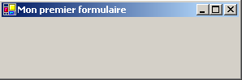
Eine grafische Benutzeroberfläche leitet sich in der Regel von der Basisklasse System.Windows.Forms.Form ab:
Die Basisklasse Form definiert ein einfaches Fenster mit Schaltflächen zum Schließen, Maximieren und Minimieren, einer anpassbaren Größe usw. und verarbeitet Ereignisse für diese grafischen Objekte. Hier spezialisieren wir die Basisklasse, indem wir ihren Titel, ihre Breite (300) und ihre Höhe (100) festlegen. Dies geschieht in ihrem Konstruktor:
Public Sub New()
' window title
Me.Text = "Mon premier formulaire"
' window dimensions
Me.Size = New System.Drawing.Size(300, 100)
End Sub
Der Fenstertitel wird über die Eigenschaft „Text“ festgelegt, die Abmessungen über die Eigenschaft „Size“. „Size“ ist im Namespace „System.Drawing“ definiert und stellt eine Struktur dar. Die Prozedur „Main“ startet die grafische Anwendung wie folgt:
Application.Run(New Form1)
Ein Formular vom Typ Form1 wird erstellt und angezeigt. Anschließend überwacht die Anwendung Ereignisse, die auf dem Formular auftreten (Klicks, Mausbewegungen usw.), und führt diejenigen aus, die das Formular verarbeitet. In diesem Fall verarbeitet unser Formular keine anderen Ereignisse als diejenigen, die von der Basisklasse Form verarbeitet werden (Klicks auf Schließen, Maximieren/Minimieren, Ändern der Fenstergröße, Verschieben des Fensters usw.).
5.1.2. Ein Formular mit einer Schaltfläche
Fügen wir nun eine Schaltfläche zu unserem Fenster hinzu:
' options
Option Strict On
Option Explicit On
' namespaces
Imports System
Imports System.Drawing
Imports System.Windows.Forms
' the form class
Public Class Form1
Inherits Form
' attributes
Private cmdTest As Button
' the manufacturer
Public Sub New()
' the title
Me.Text = "Mon premier formulaire"
' dimensions
Me.Size = New System.Drawing.Size(300, 100)
' a button
' creation
Me.cmdTest = New Button
' position
cmdTest.Location = New System.Drawing.Point(110, 20)
' size
cmdTest.Size = New System.Drawing.Size(80, 30)
' wording
cmdTest.Text = "Test"
' event manager
AddHandler cmdTest.Click, AddressOf cmdTest_Click
' add button to form
Me.Controls.Add(cmdTest)
End Sub
' event manager
Private Sub cmdTest_Click(ByVal sender As Object, ByVal evt As EventArgs)
' there was a click on the button - we say it
MessageBox.Show("Clic sur bouton", "Clic sur bouton", MessageBoxButtons.OK, MessageBoxIcon.Information)
End Sub
' test function
Public Shared Sub Main(ByVal args() As String)
' the form is displayed
Application.Run(New Form1)
End Sub
End Class
Wir haben dem Formular eine Schaltfläche hinzugefügt:
' un bouton
' création
Me.cmdTest = New Button
' position
cmdTest.Location = New System.Drawing.Point(110, 20)
' taille
cmdTest.Size = New System.Drawing.Size(80, 30)
' libellé
cmdTest.Text = "Test"
' gestionnaire d'évt
AddHandler cmdTest.Click, AddressOf cmdTest_Click
' ajout bouton au formulaire
Me.Controls.Add(cmdTest)
Die Location-Eigenschaft legt die Koordinaten (110,20) der oberen linken Ecke der Schaltfläche mithilfe einer Point-Struktur fest. Die Breite und Höhe der Schaltfläche werden mithilfe einer Size-Struktur auf (80,30) festgelegt. Die Text-Eigenschaft der Schaltfläche legt die Beschriftung der Schaltfläche fest. Die Button-Klasse verfügt über ein Click-Ereignis, das wie folgt definiert ist:
wobei *EventHandler* eine „Delegate“-Funktion mit folgender Signatur ist:
Das bedeutet, dass der Handler für das [Click]-Ereignis der Schaltfläche die Signatur des [EventHandler]-Delegaten aufweisen muss. Wenn hier die Schaltfläche „cmdTest“ angeklickt wird, wird die Methode „cmdTest_Click“ aufgerufen. Diese ist gemäß dem vorherigen EventHandler-Modell wie folgt definiert:
' event manager
Private Sub cmdTest_Click(ByVal sender As Object, ByVal evt As EventArgs)
' there was a click on the button - we say it
MessageBox.Show("Clic sur bouton", "Clic sur bouton", MessageBoxButtons.OK, MessageBoxIcon.Information)
End Sub
Wir zeigen einfach eine Meldung an:

Die Klasse wird kompiliert und ausgeführt:
dos>vbc /r:system.dll /r:system.drawing.dll /r:system.windows.forms.dll frm2.vb
Compilateur Microsoft (R) Visual Basic .NET version 7.10.3052.4
dos>frm2
Die MessageBox-Klasse wird verwendet, um Meldungen in einem Fenster anzuzeigen. Hier haben wir den Konstruktor verwendet
Overloads Public Shared Function Show(ByVal owner As IWin32Window,ByVal text As String,ByVal caption As String,ByVal buttons As MessageBoxButtons,ByVal icon As MessageBoxIcon) As DialogResult
text | die anzuzeigende Meldung |
caption | Fenstertitel |
Schaltflächen | die Schaltflächen im Fenster |
Symbol | das Symbol im Fenster |
Der Parameter „buttons“ kann Werte aus den folgenden Konstanten annehmen:
Konstante | buttons |
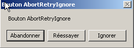 | |
 | |
 | |
 | |
 | |
 |
Der Parameter „icon“ kann Werte aus den folgenden Konstanten annehmen:
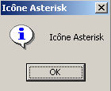 | wie oben Stopp | ||
wie „Warnung“ |  | ||
wie bei Asterisk |  | ||
 | Wie Hand | ||
 |
Die Show-Methode ist eine statische Methode, die ein Ergebnis vom Typ System.Windows.Forms.DialogResult zurückgibt, bei dem es sich um eine Aufzählung handelt:
public enum System.Windows.Forms.DialogResult
{
Abort = 0x00000003,
Cancel = 0x00000002,
Ignore = 0x00000005,
No = 0x00000007,
None = 0x00000000,
OK = 0x00000001,
Retry = 0x00000004,
Yes = 0x00000006,
}
Um festzustellen, welche Schaltfläche der Benutzer zum Schließen des MessageBox-Fensters angeklickt hat, schreiben wir:
dim res as DialogResult=MessageBox.Show(..)
if res=DialogResult.Yes then
' he pressed the yes button
...
end if
5.2. Erstellen einer grafischen Benutzeroberfläche mit Visual Studio.NET
Wir werden einige der zuvor gesehenen Beispiele noch einmal aufgreifen und sie diesmal mit Visual Studio.NET erstellen.
5.2.1. Erste Projekterstellung
- Starten Sie VS.NET und wählen Sie „Datei/Neu/Projekt“

- Legen Sie die Eigenschaften Ihres Projekts fest
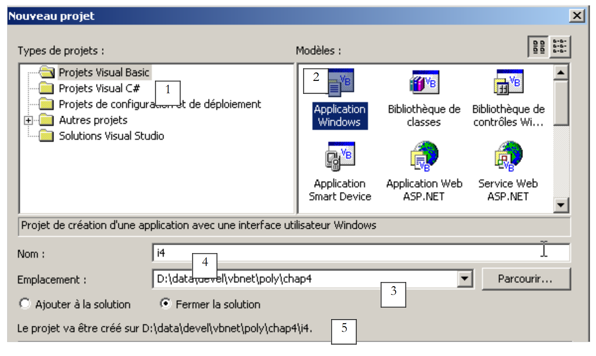 |
- Wählen Sie den Typ des Projekts aus, das Sie erstellen möchten; hier ein VB.NET-Projekt (1)
- Wählen Sie den Anwendungstyp aus, den Sie erstellen möchten; hier eine Windows-Anwendung (2)
- Geben Sie den Ordner an, in dem der Projektunterordner abgelegt werden soll (3)
- Geben Sie den Projektnamen ein (4). Dies ist gleichzeitig der Name des Ordners, der die Projektdateien enthalten wird
- Der Name dieses Ordners wird unter (5) angezeigt
- Anschließend werden im Ordner „i4“ mehrere Ordner und Dateien erstellt:
Unterordner des Ordners „project1“ 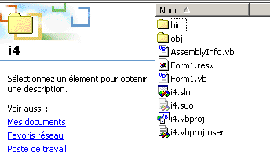 |
Von diesen Dateien ist nur eine relevant: die Datei „form1.cs“, bei der es sich um die Quelldatei handelt, die mit dem von VS.NET erstellten Formular verknüpft ist. Wir werden später darauf zurückkommen.
5.2.2. Die Fenster der VS.NET-Oberfläche
Die VS.NET-Oberfläche zeigt nun bestimmte Elemente unseres i4-Projekts an:
Wir haben ein Fenster für das Design der grafischen Benutzeroberfläche:
 |
Indem wir Steuerelemente aus der Symbolleiste (Toolbox 2) auf den Fensterbereich (1) ziehen und dort ablegen, können wir eine grafische Benutzeroberfläche erstellen. Wenn wir mit der Maus über die „Toolbox“ fahren, wird diese erweitert und zeigt eine Reihe von Steuerelementen an:
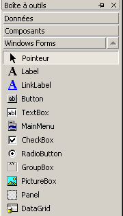
Vorerst werden wir keines davon verwenden. Immer noch auf dem VS.NET-Bildschirm finden wir das Fenster „Explorer Solution“:

Zunächst werden wir dieses Fenster nicht oft nutzen. Es zeigt alle Dateien an, aus denen das Projekt besteht. Uns interessiert nur eine davon: die Quelldatei unseres Programms, in diesem Fall Form1.vb. Ein Rechtsklick auf Form1.vb öffnet ein Menü, über das Sie entweder auf den Quellcode unserer GUI (View Code) oder auf die GUI selbst (Form Designer) zugreifen können:
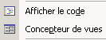
Sie können auf beide direkt über das Fenster „Lösungs-Explorer“ zugreifen:
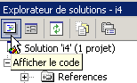 |  |
Die geöffneten Fenster „stapeln“ sich im Hauptdesignfenster:

Hier bezieht sich Form1.vb[Design] auf das Entwurfsfenster und Form1.vb auf das Codefenster. Klicken Sie einfach auf eine der Registerkarten, um zwischen den beiden Fenstern zu wechseln. Ein weiteres wichtiges Fenster, das auf dem VS.NET-Bildschirm angezeigt wird, ist das Eigenschaftenfenster:

Die im Fenster angezeigten Eigenschaften sind die des derzeit im grafischen Entwurfsfenster ausgewählten Steuerelements. Über das Menü „Ansicht“ können Sie auf verschiedene Projektfenster zugreifen:
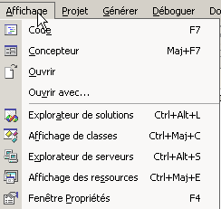
Es enthält die soeben beschriebenen Hauptfenster sowie deren Tastenkombinationen.
5.2.3. Ein Projekt ausführen
Auch wenn wir noch keinen Code geschrieben haben, verfügen wir über ein ausführbares Projekt. Drücken Sie F5 oder wählen Sie „Debug/Start“, um es auszuführen. Es erscheint das folgende Fenster:

Dieses Fenster kann maximiert, minimiert, in der Größe angepasst und geschlossen werden.
5.2.4. Der von VS.NET generierte Code
Sehen wir uns den Code (Ansicht/Code) für unsere Anwendung an:
Public Class Form1
Inherits System.Windows.Forms.Form
#Region " Code généré par le Concepteur Windows Form "
Public Sub New()
MyBase.New()
'This call is required by the Windows Form Designer.
InitializeComponent()
'Add any initialization after InitializeComponent() call
End Sub
'The substituted method Disposes of the form to clean up the list of components.
Protected Overloads Overrides Sub Dispose(ByVal disposing As Boolean)
If disposing Then
If Not (components Is Nothing) Then
components.Dispose()
End If
End If
MyBase.Dispose(disposing)
End Sub
'Required by the Windows Form Designer
Private components As System.ComponentModel.IContainer
'REMARQUE: the following procedure is required by the Windows Form Designer
'It can be modified using the Windows Form Designer.
'Do not modify it using the code editor.
<System.Diagnostics.DebuggerStepThrough()> Private Sub InitializeComponent()
components = New System.ComponentModel.Container()
Me.Text = "Form2"
End Sub
#End Region
End Class
Eine grafische Benutzeroberfläche leitet sich von der Basisklasse System.Windows.Forms.Form ab:
Die Basisklasse „Form“ definiert ein einfaches Fenster mit Schaltflächen zum Schließen und Maximieren/Minimieren, einer anpassbaren Größe und weiteren Funktionen und verarbeitet Ereignisse für diese grafischen Objekte. Der Konstruktor des Formulars verwendet eine InitializeComponent-Methode, in der die Steuerelemente des Formulars erstellt und initialisiert werden.
Public Sub New()
MyBase.New()
'This call is required by the Windows Form Designer.
InitializeComponent()
'Add any initialization after InitializeComponent() call
End Sub
Alle weiteren Aufgaben, die im Konstruktor ausgeführt werden müssen, können nach dem Aufruf von InitializeComponent erfolgen. Die InitializeComponent-Methode
Private Sub InitializeComponent()
'
'Form1
'
Me.AutoScaleBaseSize = New System.Drawing.Size(5, 13)
Me.ClientSize = New System.Drawing.Size(292, 53)
Me.Name = "Form1"
Me.Text = "Form1"
End Sub
legt den Titel des Fensters „Form1“, seine Breite (292) und seine Höhe (53) fest. Der Fenstertitel wird über die Text-Eigenschaft und die Abmessungen über die Size-Eigenschaft festgelegt. Size ist im Namespace System.Drawing definiert und ist eine Struktur. Um diese Anwendung auszuführen, müssen wir das Hauptmodul des Projekts definieren. Dazu verwenden wir die Option [Projekte/Eigenschaften]:

Unter [Startup Object] geben wir [Form1] an, das Formular, das wir gerade erstellt haben. Um die Anwendung auszuführen, verwenden wir die Option [Debug/Start]:

5.2.5. Kompilieren in einem Eingabeaufforderungsfenster
Versuchen wir nun, diese Anwendung in einem DOS-Fenster zu kompilieren und auszuführen:
dos>dir form1.vb
14/03/2004 11:53 514 Form1.vb
dos>vbc /r:system.dll /r:system.windows.forms.dll form1.vb
vbc : error BC30420: 'Sub Main' cannot be found in 'Form1'.
Der Compiler meldet, dass er die Prozedur [Main] nicht finden kann. Tatsächlich hat VS.NET diese nicht generiert. Wir sind ihr jedoch bereits in den vorherigen Beispielen begegnet. Sie hat folgende Form:
Shared Sub Main()
' launch application
Application.Run(New Form1) ' where Form1 is the form
End Sub
Fügen wir den obigen Code zu [Form1.vb] hinzu und kompilieren wir neu:
dos>vbc /r:system.dll /r:system.windows.forms.dll form2.vb
Compilateur Microsoft (R) Visual Basic .NET version 7.10.3052.4
Form2.vb(41) : error BC30451: Le nom 'Application' n'est pas déclaré.
Application.Run(New Form2)
~~~~~~~~~~~
Diesmal ist der Name [Application] unbekannt. Das bedeutet lediglich, dass wir seinen Namespace [System.Windows.Forms] nicht importiert haben. Fügen wir die folgende Anweisung hinzu:
und kompilieren Sie anschließend neu:
Diesmal funktioniert es. Starten wir es:
Ein Formular vom Typ Form1 wird erstellt und angezeigt. Sie können das Hinzufügen der [Main]-Prozedur vermeiden, indem Sie die Option /m des Compilers verwenden, mit der Sie die auszuführende Klasse angeben können, sofern diese von System.Windows.Forms erbt:
Die Option /m:form2 gibt an, dass die auszuführende Klasse die Klasse mit dem Namen [form2] ist.
5.2.6. Ereignisbehandlung
Sobald das Formular angezeigt wird, überwacht die Anwendung Ereignisse, die auf dem Formular auftreten (Klicks, Mausbewegungen usw.), und führt diejenigen aus, die das Formular verarbeitet. In diesem Fall verarbeitet unser Formular keine anderen Ereignisse als diejenigen, die von der Basisklasse Form verarbeitet werden (Klicks auf Schließen-Schaltflächen, Maximieren-/Minimieren-Schaltflächen, Ändern der Fenstergröße, Verschieben des Fensters usw.). Das generierte Formular verwendet ein components-Attribut, das nirgendwo verwendet wird. Die Dispose-Methode ist hier ebenfalls überflüssig. Dasselbe gilt für bestimmte Namespaces (Collections, ComponentModel, Data), die verwendet werden, sowie für den für das Projekt „projet1“ definierten Namespace. Daher lässt sich der Code in diesem Beispiel wie folgt vereinfachen:
Imports System
Imports System.Drawing
Imports System.Windows.Forms
Public Class Form1
Inherits System.Windows.Forms.Form
' manufacturer
Public Sub New()
' building the form with its components
InitializeComponent()
End Sub
Private Sub InitializeComponent()
' window size
Me.Size = New System.Drawing.Size(300, 300)
' window title
Me.Text = "Form1"
End Sub
Shared Sub Main()
' launch application
Application.Run(New Form1)
End Sub
End Class
5.2.7. Fazit
Wir übernehmen nun den von VS.NET generierten Code unverändert und fügen lediglich unseren eigenen Code hinzu, insbesondere zur Behandlung von Ereignissen im Zusammenhang mit den verschiedenen Steuerelementen auf dem Formular.
5.3. Fenster mit Eingabefeld, Schaltfläche und Beschriftung
5.3.1. Grafisches Design
Im vorherigen Beispiel haben wir keine Komponenten im Fenster platziert. Wir starten ein neues Projekt namens interface2. Dazu folgen wir der zuvor beschriebenen Vorgehensweise zum Erstellen eines Projekts:
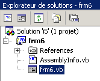
Erstellen wir nun ein Fenster mit einer Schaltfläche, einer Beschriftung und einem Eingabefeld:
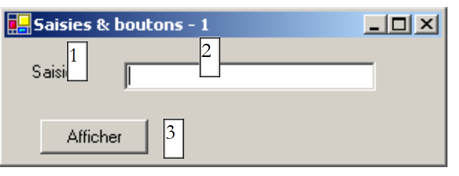 |
Die Felder lauten wie folgt:
Nr. | Name | Typ | Rolle |
1 | lblInput | Beschriftung | eine Beschriftung |
2 | txtInput | Textfeld | ein Eingabefeld |
3 | btnDisplay | Schaltfläche | zum Anzeigen des Inhalts des Textfelds „txtSaisie“ in einem Dialogfeld |
Sie können wie folgt vorgehen, um dieses Fenster zu erstellen: Klicken Sie mit der rechten Maustaste innerhalb des Fensters außerhalb einer Komponente und wählen Sie die Option „Eigenschaften“, um auf die Eigenschaften des Fensters zuzugreifen:
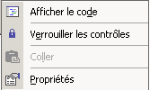
Das Fenster „Eigenschaften“ wird dann auf der rechten Seite angezeigt:

Einige dieser Eigenschaften sind besonders erwähnenswert:
zum Festlegen der Hintergrundfarbe des Fensters | |
um die Farbe der Grafiken oder des Texts im Fenster festzulegen | |
um dem Fenster ein Menü zuzuordnen | |
um dem Fenster einen Titel zu geben | |
um den Fenstertyp festzulegen | |
um die Schriftart für den Text im Fenster festzulegen | |
zum Festlegen des Fensternamens |
Hier legen wir die Eigenschaften „Text“ und „Name“ fest:
Reißverschlüsse & Knöpfe – 1 | |
frmInputButtons |
Verwendung der Leiste „Toolbox“
- Wählen Sie die benötigten Komponenten aus
- ziehen Sie sie auf das Fenster und legen Sie die richtigen Abmessungen fest
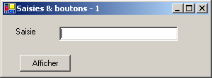 |  |
Sobald Sie die Komponente aus der „Toolbox“ ausgewählt haben, verwenden Sie die „Esc“-Taste, um die Symbolleiste auszublenden, und ziehen Sie dann und passen Sie die Größe der Komponente an. Führen Sie dies für die drei benötigten Komponenten: Label, TextBox, Button. Um die Komponenten auszurichten und die Komponenten richtig zu positionieren und anzupassen, verwenden Sie das Menü „Format“: | 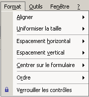 |
Die Formatierung funktioniert wie folgt:
Mit der Option „Ausrichten“ können Sie Komponenten ausrichten |  |
Die Option „Gleiche Größe“ stellt sicher, dass Komponenten dieselbe Höhe oder dieselbe Breite haben: | 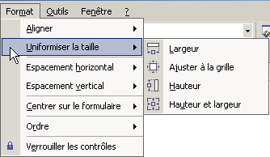 |
Die Option „Horizontaler Abstand“ dient beispielsweise dazu, dazu, Komponenten horizontal mit gleichmäßigem Abstand zueinander. Dasselbe gilt für die Option „Vertikaler Abstand“, um vertikal auszurichten. Mit der Option „In Formular zentrieren“ können Sie eine Komponente horizontal oder vertikal innerhalb des Fensters zu zentrieren: |  |
Sobald die Komponenten korrekt im Fenster platziert sind, legen Sie ihre Eigenschaften fest. Klicken Sie dazu mit der rechten Maustaste auf die Komponente und die Option „Eigenschaften“ aus:
Wählen Sie die Komponente aus, um , um das Eigenschaftenfenster zu öffnen. In diesem Fenster ändern Sie die folgenden Eigenschaften: Name: lblSaisie, Text: Saisie
Wählen Sie die Komponente aus, um das Eigenschaftenfenster zu öffnen. Ändern Sie in diesem Fenster die folgenden Eigenschaften: Name: txtSaisie, Text: leer lassen
Name: cmdAfficher, Text: Anzeigen
Text: Eingaben & Schaltflächen – 1 |  |
Wir können unser Projekt ausführen (Strg-F5) , um einen ersten Eindruck vom Fenster in Aktion zu sehen: |
Schließen Sie das Fenster. Wir müssen noch die Prozedur schreiben, die mit einem Klick auf die Schaltfläche „Display“ verbunden ist.
5.3.2. Behandlung von Formularereignissen
Sehen wir uns den vom Visual Designer generierten Code an:
...
Public Class frmSaisiesBoutons
Inherits System.Windows.Forms.Form
' components
Private components As System.ComponentModel.Container = Nothing
Friend WithEvents btnAfficher As System.Windows.Forms.Button
Friend WithEvents lblsaisie As System.Windows.Forms.Label
Friend WithEvents txtsaisie As System.Windows.Forms.TextBox
' manufacturer
Public Sub New()
InitializeComponent()
End Sub
...
' component initialization
Private Sub InitializeComponent()
...
End Sub
End Class
Beachten Sie zunächst die spezifische Deklaration der Komponenten:
- Das Schlüsselwort „Friend“ gibt an, dass die Komponente für alle Klassen im Projekt sichtbar ist
- Das Schlüsselwort „WithEvents“ gibt an, dass die Komponente Ereignisse generiert. Wir werden uns nun ansehen, wie diese Ereignisse behandelt werden
Öffnen Sie das Codefenster des Formulars (Ansicht/Code oder F7):
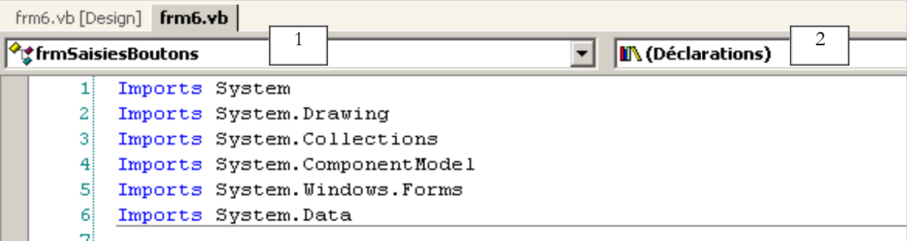 |
Das obige Fenster zeigt zwei Dropdown-Listen (1) und (2) an. Liste (1) ist die Liste der Formularkomponenten:

Liste (2) zeigt die Ereignisse an, die mit der in (1) ausgewählten Komponente verknüpft sind:

Eines der mit der Komponente verbundenen Ereignisse wird fett dargestellt (hier: „Click“). Dies ist das Standardereignis der Komponente. Sie können auf den Handler für dieses spezifische Ereignis zugreifen, indem Sie im Entwurfsfenster auf die Komponente doppelklicken. VB.NET generiert dann automatisch das Gerüst des Ereignis-Handlers im Codefenster und positioniert den Cursor darauf. Um auf die Handler für die anderen Ereignisse zuzugreifen, wechseln Sie zum Codefenster, wählen Sie die Komponente aus der Liste (1) aus und wählen Sie das Ereignis aus (2). VB.NET generiert dann das Gerüst des Ereignis-Handlers oder positioniert den Cursor darauf, falls es bereits generiert wurde:
Private Sub btnAfficher_Click(ByVal sender As System.Object, ByVal e As System.EventArgs) Handles btnAfficher.Click
...
End Sub
Standardmäßig benennt VB.NET den Ereignishandler für das Ereignis E der Komponente C. Sie können diesen Namen ändern, wenn Sie möchten. Dies wird jedoch nicht empfohlen. VB-Entwickler behalten in der Regel den von VB generierten Namen bei, was die Konsistenz der Namensgebung in allen VB-Programmen gewährleistet. Die Zuordnung der Prozedur btnAfficher_Click zum Click-Ereignis der Komponente btnAfficher erfolgt nicht über den Prozedurnamen, sondern über das Schlüsselwort handles:
Handles btnAfficher.Click
Im obigen Code gibt das Schlüsselwort „handles“ an, dass die Prozedur das Click-Ereignis der Komponente „btnAfficher“ verarbeitet. Der Ereignishandler hat zwei Parameter:
das Objekt, das das Ereignis ausgelöst hat (in diesem Fall die Schaltfläche) | |
ein EventArgs-Objekt, das das aufgetretene Ereignis detailliert beschreibt |
Wir werden hier keinen dieser Parameter verwenden. Jetzt müssen wir nur noch den Code vervollständigen. Hier möchten wir ein Dialogfeld anzeigen, das den Inhalt des Feldes „txtSaisie“ enthält:
Private Sub btnAfficher_Click(ByVal sender As Object, ByVal e As System.EventArgs)
' the text entered in the TxtSaisie input box is displayed
MessageBox.Show("texte saisi= " + txtsaisie.Text, "Vérification de la saisie", MessageBoxButtons.OK, MessageBoxIcon.Information)
End Sub
Wenn die Anwendung ausgeführt wird, geschieht Folgendes:

5.3.3. Eine weitere Methode zur Ereignisbehandlung
Für die Schaltfläche „btnAfficher“ hat VS.NET den folgenden Code generiert:
Private Sub InitializeComponent()
...
'
'btnAfficher
'
Me.btnAfficher.Location = New System.Drawing.Point(102, 48)
Me.btnAfficher.Name = "btnAfficher"
Me.btnAfficher.Size = New System.Drawing.Size(88, 24)
Me.btnAfficher.TabIndex = 2
Me.btnAfficher.Text = "Afficher"
...
End Sub
...
' event manager click on cmdAfficher button
Private Sub btnAfficher_Click(ByVal sender As System.Object, ByVal e As System.EventArgs) Handles btnAfficher.Click
...
End Sub
Wir können die Prozedur „btnAfficher_Click“ auf andere Weise mit dem Klick-Ereignis der Schaltfläche „btnAfficher“ verknüpfen:
Private Sub InitializeComponent()
...
'
'btnAfficher
'
Me.btnAfficher.Location = New System.Drawing.Point(102, 48)
Me.btnAfficher.Name = "btnAfficher"
Me.btnAfficher.Size = New System.Drawing.Size(88, 24)
Me.btnAfficher.TabIndex = 2
Me.btnAfficher.Text = "Afficher"
AddHandler btnAfficher.Click, AddressOf btnAfficher_Click
...
End Sub
...
' event manager click on cmdAfficher button
Private Sub btnAfficher_Click(ByVal sender As System.Object, ByVal e As System.EventArgs)
...
End Sub
Die Prozedur „btnAfficher_Click“ hat das Schlüsselwort „Handles“ verloren und damit ihre Verknüpfung mit dem Ereignis „btnAfficher.Click“. Diese Verknüpfung wird nun mithilfe des Schlüsselworts „AddHandler“ hergestellt:
AddHandler btnAfficher.Click, AddressOf btnAfficher_Click
Der obige Code, der in die Prozedur „InitializeComponent“ des Formulars eingefügt wird, verknüpft die Prozedur „btnAfficher_Click“ mit dem Ereignis „btnAfficher.Click“. Außerdem benötigt die Komponente „btnAfficher“ das Schlüsselwort „WithEvents“ nicht mehr:
Friend btnAfficher As System.Windows.Forms.Button
Was ist der Unterschied zwischen den beiden Methoden?
- Das Schlüsselwort „handles“ erlaubt es nur, ein Ereignis zur Entwurfszeit mit einer Prozedur zu verknüpfen. Der Designer weiß im Voraus, dass eine Prozedur P die Ereignisse E1, E2, ... behandeln muss, und schreibt den Code
Private Sub btnAfficher_Click(ByVal sender As System.Object, ByVal e As System.EventArgs) handles E1, E2, ..., En
Es ist in der Tat möglich, dass eine Prozedur mehrere Ereignisse verarbeitet.
- Das Schlüsselwort addhandler ermöglicht es, ein Ereignis zur Laufzeit mit einer Prozedur zu verknüpfen. Dies ist in einem Producer-Consumer-Ereignis-Framework nützlich. Ein Objekt erzeugt ein bestimmtes Ereignis, das für andere Objekte von Interesse sein könnte. Diese Objekte abonnieren den Producer, um das Ereignis zu empfangen (beispielsweise eine Temperatur, die einen kritischen Schwellenwert überschreitet). Während der Ausführung der Anwendung muss der Ereignis-Producer verschiedene Anweisungen ausführen:
wobei E das vom Produzenten erzeugte Ereignis ist und P1 eine der Prozeduren ist, die zu den verschiedenen Objekten gehören, die dieses Ereignis verarbeiten. Wir werden in einem späteren Kapitel Gelegenheit haben, uns erneut mit einer Produzenten-Verbraucher-Ereignisanwendung zu befassen.
5.3.4. Fazit
Aus den beiden untersuchten Projekten lässt sich schließen, dass die Aufgabe des Entwicklers, sobald die grafische Benutzeroberfläche mit VS.NET erstellt ist, darin besteht, die Ereignisbehandler für die Ereignisse zu schreiben, die er innerhalb dieser Oberfläche verwalten möchte. Von nun an werden wir nur noch den Code für diese Handler präsentieren.
5.4. Einige nützliche Komponenten
Wir werden nun verschiedene Anwendungen vorstellen, die die gängigsten Komponenten nutzen, um deren wichtigste Methoden und Eigenschaften zu untersuchen. Für jede Anwendung werden wir die grafische Benutzeroberfläche und den entsprechenden Code, insbesondere die Ereignisbehandler, präsentieren.
5.4.1. Form
Wir beginnen mit der Vorstellung der wesentlichen Komponente: dem Formular, auf dem Komponenten platziert werden. Einige seiner grundlegenden Eigenschaften haben wir bereits behandelt. Hier konzentrieren wir uns auf einige wichtige Formularereignisse.
Das Formular wird geladen | |
Das Formular wird geschlossen | |
Das Formular ist geschlossen |
Das Load-Ereignis tritt ein, noch bevor das Formular überhaupt angezeigt wird. Das Closing-Ereignis tritt ein, wenn das Formular geschlossen wird. Dieses Schließen kann noch programmgesteuert verhindert werden. Wir erstellen ein Formular namens Form1 ohne Komponenten:

Wir behandeln die drei zuvor genannten Ereignisse:
Private Sub Form1_Load(ByVal sender As Object, ByVal e As System.EventArgs) Handles MyBase.Load
' initial form loading
MessageBox.Show("Evt Load", "Load")
End Sub
Private Sub Form1_Closing(ByVal sender As Object, ByVal e As System.ComponentModel.CancelEventArgs) Handles MyBase.Closing
' the form is closing
MessageBox.Show("Evt Closing", "Closing")
' confirmation requested
Dim réponse As DialogResult = MessageBox.Show("Voulez-vous vraiment quitter l'application", "Closing", MessageBoxButtons.YesNo, MessageBoxIcon.Question)
If réponse = DialogResult.No Then
e.Cancel = True
End If
End Sub
Private Sub Form1_Closed(ByVal sender As Object, ByVal e As System.EventArgs) Handles MyBase.Closed
' the form is closing
MessageBox.Show("Evt Closed", "Closed")
End Sub
Wir verwenden die MessageBox-Funktion, um über die verschiedenen Ereignissen benachrichtigt zu werden. Das Closing-Ereignis tritt ein, wenn der Benutzer das Fenster schließt. | 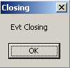 |
Wir fragen ihn dann, ob er die Anwendung wirklich beenden möchte: |  |
Wenn er mit „Nein“ antwortet, setzen wir die Cancel-Eigenschaft des CancelEventArgs, die die Methode als Parameter erhalten hat. Wenn wir diese Eigenschaft auf „False“ setzen, wird das Schließen des Fensters; andernfalls wird fortgefahren: |  |
5.4.2. Label-Steuerelemente und TextBox-Steuerelemente
Diese beiden Komponenten sind uns bereits begegnet. Label ist eine Textkomponente und TextBox ist eine Eingabefeldkomponente. Ihre Haupteigenschaft ist Text, die sich entweder auf den Inhalt des Eingabefelds oder auf den Label-Text bezieht. Diese Eigenschaft ist les- und schreibbar. Das für TextBox typischerweise verwendete Ereignis ist TextChanged, das signalisiert, dass der Benutzer das Eingabefeld geändert hat. Hier ist ein Beispiel, das das TextChanged-Ereignis verwendet, um Änderungen in einem Eingabefeld zu verfolgen:
 |
Nr. | Typ | Name | Rolle |
1 | TextBox | txtInput | Eingabefeld |
2 | Beschriftung | lblControl | zeigt den Text aus 1 in Echtzeit an |
3 | Schaltfläche | cmdClear | zum Löschen der Felder 1 und 2 |
4 | Schaltfläche | cmdExit | zum Beenden der Anwendung |
Der relevante Code für diese Anwendung sind die Ereignisbehandler:
' click on btn quit
Private Sub cmdQuitter_Click(ByVal sender As Object, ByVal e As System.EventArgs) _
Handles cmdQuitter.Click
' click on the Quit button - exit the application
Application.Exit()
End Sub
' field modification txtSaisie
Private Sub txtSaisie_TextChanged(ByVal sender As Object, ByVal e As System.EventArgs) _
Handles txtSaisie.TextChanged
' the content of TextBox has changed - copy it to Label lblControle
lblControle.Text = txtSaisie.Text
End Sub
' click on btn delete
Private Sub cmdEffacer_Click(ByVal sender As Object, ByVal e As System.EventArgs) _
Handles cmdEffacer.Click
' delete the contents of the input box
txtSaisie.Text = ""
End Sub
' a key has been pressed
Private Sub txtSaisie_KeyPress(ByVal sender As Object, ByVal e As System.Windows.Forms.KeyPressEventArgs) _
Handles txtSaisie.KeyPress
' see which key has been pressed
Dim touche As Char = e.KeyChar
If touche = ControlChars.Cr Then
MessageBox.Show(txtSaisie.Text, "Contrôle", MessageBoxButtons.OK, MessageBoxIcon.Information)
e.Handled = True
End If
End Sub
Beachten Sie, wie die Anwendung in der Prozedur „cmdQuitter_Click“ beendet wird: Application.Exit(). Das folgende Beispiel verwendet ein mehrzeiliges Textfeld:
 |
Die Liste der Steuerelemente lautet wie folgt:
Nr. | Typ | Name | Rolle |
1 | Textfeld | txtMultiLines | mehrzeiliges Eingabefeld |
2 | Textfeld | txtAdd | einzeiliges Eingabefeld |
3 | Schaltfläche | btnAdd | 2 von 1 abziehen |
Um ein Textfeld mehrzeilig zu gestalten, legen Sie die folgenden Steuerungseigenschaften fest:
um mehrere Textzeilen zuzulassen | |
um festzulegen, ob das Steuerelement Bildlaufleisten haben soll (Horizontal, Vertikal, Beide) oder nicht (Keine) | |
Wenn auf „true“ gesetzt, springt die Eingabetaste zur nächsten Zeile | |
Wenn auf „true“ gesetzt, fügt die Tabulatortaste ein Tabulatorzeichen in den Text ein |
Der relevante Code ist derjenige, der den Klick auf die Schaltfläche [Add] verarbeitet, sowie derjenige, der Änderungen am Eingabefeld [txtAdd] verarbeitet:
' évt btnAjouter_Click
Private Sub btnAjouter_Click1(ByVal sender As Object, ByVal e As System.EventArgs) _
Handles btnAjouter.Click
' add the content of txtAjout to that of txtMultilignes
txtMultilignes.Text &= txtAjout.Text
txtAjout.Text = ""
End Sub
' evt txtAjout_TextChanged
Private Sub txtAjout_TextChanged1(ByVal sender As Object, ByVal e As System.EventArgs) _
Handles txtAjout.TextChanged
' set the state of the Add button
btnAjouter.Enabled = txtAjout.Text.Trim() <> ""
End Sub
5.4.3. ComboBox-Dropdown-Listen
 |  |
Eine ComboBox-Komponente ist eine Dropdown-Liste in Kombination mit einem Eingabefeld: Der Benutzer kann entweder einen Eintrag auswählen (2) oder Text eingeben (1). Es gibt drei Arten von ComboBoxen, die durch die Eigenschaft „Style“ definiert werden:
Liste ohne Dropdown-Menü mit Bearbeitungsfeld | |
Dropdown-Liste mit Bearbeitungsfeld | |
Dropdown-Liste ohne Eingabefeld |
Standardmäßig ist der Typ einer ComboBox „DropDown“. Um mehr über die ComboBox-Klasse zu erfahren, geben Sie ComboBox in den Hilfe-Index ein (Hilfe/Index). Die ComboBox-Klasse verfügt über einen einzigen Konstruktor:
Public Sub New() | erstellt ein leeres ComboBox-Objekt |
Die Elemente in der ComboBox sind über die Eigenschaft „Items“ verfügbar:
Dies ist eine indizierte Eigenschaft, wobei Items(i) auf das i-te Element in der Combo verweist. Sei C eine Combo und C.Items ihre Liste von Elementen. Wir haben die folgenden Eigenschaften:
Anzahl der Elemente in der ComboBox | |
Element i der ComboBox | |
fügt das Objekt o als letztes Element der ComboBox hinzu | |
fügt ein Array von Objekten am Ende der Combobox hinzu | |
fügt das Objekt o an Position i in die Combobox ein | |
entfernt das Element i aus der Kombinationsfeld | |
entfernt das Objekt o aus der Kombinationsfeld | |
löscht alle Elemente aus der Kombinationsfeld | |
gibt die Position i des Objekts o in der Kombinationsfeld zurück |
Es mag überraschend erscheinen, dass eine Kombinationsfeld Objekte enthalten kann, obwohl es normalerweise Zeichenfolgen enthält. Optisch ist dies tatsächlich der Fall. Wenn eine ComboBox ein Objekt obj enthält, zeigt sie die Zeichenfolge obj.ToString() an. Erinnern Sie sich daran, dass jedes Objekt über eine von der Objektklasse geerbte ToString-Methode verfügt, die eine Zeichenfolge zurückgibt, die das Objekt „repräsentiert“. Das ausgewählte Element in der Combobox C ist C.SelectedItem oder C.Items(C.SelectedIndex), wobei C.SelectedIndex der Index des ausgewählten Elements ist, beginnend mit Null für das erste Element.
Wenn ein Element aus der Dropdown-Liste ausgewählt wird, wird das SelectedIndexChanged-Ereignis ausgelöst, das dann verwendet werden kann, um eine Änderung der Auswahl in der ComboBox zu erkennen. In der folgenden Anwendung verwenden wir dieses Ereignis, um das aus der Liste ausgewählte Element anzuzeigen.

Wir zeigen hier nur den für das Fenster relevanten Code. Im Konstruktor des Formulars füllen wir die Kombinationsfeld:
Public Sub New()
' création formulaire
InitializeComponent()
' remplissage combo
cmbNombres.Items.AddRange(New String() {"zéro", "un", "deux", "trois", "quatre"})
' nous sélectionnons le 1er élément de la liste
cmbNombres.SelectedIndex = 0
End Sub
Wir behandeln das SelectedIndexChanged-Ereignis des Kombinationsfelds, das signalisiert, dass ein neues Element ausgewählt wurde:
Private Sub cmbNombres_SelectedIndexChanged(ByVal sender As Object, ByVal e As System.EventArgs) _
Handles cmbNombres.SelectedIndexChanged
' the selected item has changed - it is displayed
MessageBox.Show("Elément sélectionné : (" & cmbNombres.SelectedItem.ToString & "," & cmbNombres.SelectedIndex & ")", "Combo", MessageBoxButtons.OK, MessageBoxIcon.Information)
End Sub
5.4.4. ListBox-Komponente
Wir schlagen vor, die folgende Benutzeroberfläche zu erstellen:
 |
Die Komponenten dieses Fensters sind wie folgt:
Nr. | Typ | Name | Funktion/Eigenschaften |
0 | Formular | Form1 | Formular – BorderStyle=FixedSingle |
1 | Textfeld | txtInput | Eingabefeld |
2 | Schaltfläche | btnAdd | Schaltfläche zum Hinzufügen des Inhalts von Eingabefeld 1 zur Liste 3 |
3 | ListBox | listBox1 | Liste 1 |
4 | ListBox | listBox2 | Liste 2 |
5 | Schaltfläche | btn1TO2 | überträgt die ausgewählten Elemente aus Liste 1 in Liste 2 |
6 | Schaltfläche | cmd2T0 | macht das Gegenteil |
7 | Schaltfläche | btnClear1 | löscht Liste 1 |
8 | Schaltfläche | btnClear2 | Löscht Liste 2 |
- Der Benutzer gibt Text in Feld 1 ein. Über die Schaltfläche „Hinzufügen“ (2) fügt er diesen zur Liste 1 hinzu. Das Eingabefeld (1) wird daraufhin gelöscht, und der Benutzer kann einen neuen Eintrag hinzufügen.
- Er kann Elemente von einer Liste in eine andere übertragen, indem er das zu übertragende Element in einer der Listen auswählt und die entsprechende Schaltfläche 5 oder 6 wählt. Das übertragene Element wird am Ende der Zielliste hinzugefügt und aus der Quellliste entfernt.
- Er kann auf einen Eintrag in Liste 1 doppelklicken. Dieser Eintrag wird dann zur Bearbeitung in das Eingabefeld übertragen und aus Liste 1 entfernt.
Die Schaltflächen werden nach den folgenden Regeln aktiviert oder deaktiviert:
- Die Schaltfläche „Hinzufügen“ ist nur aktiviert, wenn das Eingabefeld nicht leer ist
- Schaltfläche 5 zum Übertragen von Liste 1 nach Liste 2 ist nur aktiviert, wenn ein Element in Liste 1 ausgewählt ist
- Die Schaltfläche 6 zum Übertragen von Liste 2 nach Liste 1 ist nur aktiviert, wenn in Liste 2 ein Element ausgewählt ist
- Die Tasten 7 und 8 zum Löschen der Listen 1 und 2 sind nur aktiviert, wenn die zu löschende Liste Elemente enthält.
Unter den oben genannten Bedingungen müssen alle Schaltflächen beim Start der Anwendung deaktiviert sein. Das bedeutet, dass die Eigenschaft „Enabled“ der Schaltflächen auf „false“ gesetzt werden muss. Dies kann während der Entwurfsphase erfolgen, wodurch der entsprechende Code in der Methode „InitializeComponent“ generiert wird, oder wir können es selbst im Konstruktor tun, wie unten gezeigt:
Public Sub New()
' initial form creation
InitializeComponent()
' additional initializations
' a number of buttons are disabled
btnAjouter.Enabled = False
btn1TO2.Enabled = False
btn2TO1.Enabled = False
btnEffacer1.Enabled = False
btnEffacer2.Enabled = False
End Sub
Der Status der Schaltfläche „Hinzufügen“ wird durch den Inhalt des Texteingabefelds gesteuert. Mit dem TextChanged-Ereignis können wir Änderungen an diesem Inhalt verfolgen:
' change in field txtsaisie
Private Sub txtSaisie_TextChanged(ByVal sender As Object, ByVal e As System.EventArgs) _
Handles txtSaisie.TextChanged
' the content of txtSaisie has changed
' the Add button is only lit if the entry is non-empty
btnAjouter.Enabled = txtSaisie.Text.Trim() <> ""
End Sub
Der Status der Übertragungsschaltflächen hängt davon ab, ob in der Liste, die sie steuern, ein Element ausgewählt wurde oder nicht:
' chgt selected item without listbox1
Private Sub listBox1_SelectedIndexChanged(ByVal sender As Object, ByVal e As System.EventArgs) _
Handles listBox1.SelectedIndexChanged
' an item has been selected
' switch on the 1 to 2 transfer button
btn1TO2.Enabled = True
End Sub
' chgt selected item without listbox2
Private Sub listBox2_SelectedIndexChanged(ByVal sender As Object, ByVal e As System.EventArgs) _
Handles listBox2.SelectedIndexChanged
' an item has been selected
' switch on the 2 to 1 transfer button
btn2TO1.Enabled = True
End Sub
Der Code, der mit dem Klicken auf die Schaltfläche „Hinzufügen“ verknüpft ist, lautet wie folgt:
' click on btn Add
Private Sub btnAjouter_Click(ByVal sender As Object, ByVal e As System.EventArgs) _
Handles btnAjouter.Click
' add a new element to list 1
listBox1.Items.Add(txtSaisie.Text.Trim())
' raz de la saisie
txtSaisie.Text = ""
' List 1 is not empty
btnEffacer1.Enabled = True
' return focus to input box
txtSaisie.Focus()
End Sub
Beachten Sie die Focus-Methode, mit der Sie den „Fokus“ auf ein Formularsteuerelement setzen können. Der Code, der mit dem Klicken auf die Schaltflächen „Löschen“ verknüpft ist:
' click on btn Delete1
Private Sub btnEffacer1_Click(ByVal sender As Object, ByVal e As System.EventArgs) _
Handles btnEffacer1.Click
' delete list 1
listBox1.Items.Clear()
btnEffacer1.Enabled = False
End Sub
' click on btn delete2
Private Sub btnEffacer2_Click(ByVal sender As Object, ByVal e As System.EventArgs)
' delete list 2
listBox2.Items.Clear()
btnEffacer2.Enabled = False
End Sub
Der Code zum Übertragen ausgewählter Elemente von einer Liste in eine andere:
' click on btn btn1to2
Private Sub btn1TO2_Click(ByVal sender As Object, ByVal e As System.EventArgs) _
Handles btn1TO2.Click
' transfer the item selected in List 1 to List 2
transfert(listBox1, listBox2)
' delete buttons
btnEffacer2.Enabled = True
btnEffacer1.Enabled = listBox1.Items.Count <> 0
' transfer buttons
btn1TO2.Enabled = False
btn2TO1.Enabled = False
End Sub
' click on btn btn2to1
Private Sub btn2TO1_Click(ByVal sender As Object, ByVal e As System.EventArgs) _
Handles btn2TO1.Click
' transfer item selected in List 2 to List 1
transfert(listBox2, listBox1)
' delete buttons
btnEffacer1.Enabled = True
btnEffacer2.Enabled = listBox2.Items.Count <> 0
' transfer buttons
btn1TO2.Enabled = False
btn2TO1.Enabled = False
End Sub
' transfer
Private Sub transfert(ByVal l1 As ListBox, ByVal l2 As ListBox)
' transfer selected item from list 1 to list l2
' a selected item?
If l1.SelectedIndex = -1 Then Return
' addition to l2
l2.Items.Add(l1.SelectedItem)
' deletion in l1
l1.Items.RemoveAt(l1.SelectedIndex)
End Sub
Zunächst erstellen wir eine Methode
Private Sub transfert(ByVal l1 As ListBox, ByVal l2 As ListBox)
die das ausgewählte Element aus Liste l1 in Liste l2 überträgt. So können wir eine einzige Methode anstelle von zwei verwenden, um ein Element von ListBox1 nach ListBox2 oder von ListBox2 nach ListBox1 zu übertragen. Bevor wir die Übertragung durchführen, stellen wir sicher, dass in Liste l1 tatsächlich ein Element ausgewählt ist:
' un élément sélectionné ?
If l1.SelectedIndex = -1 Then Return
Die SelectedIndex-Eigenschaft ist -1, wenn derzeit kein Element ausgewählt ist. In den Prozeduren
Private Sub btnXTOY_Click(ByVal sender As Object, ByVal e As System.EventArgs) _
Handles btnXTOY.Click
Wir übertragen den Inhalt von Liste X in Liste Y und aktualisieren den Status bestimmter Steuerelemente, um den neuen Zustand der Listen widerzuspiegeln.
5.4.5. CheckBox-Kontrollkästchen, ButtonRadio-Optionsfelder
Wir schlagen vor, die folgende Anwendung zu schreiben:
 |
Die Fensterkomponenten sind wie folgt:
Nr. | Typ | Name | Funktion |
1 | RadioButton | radioButton1 radioButton2 radioButton3 | 3 Optionsfelder |
2 | Kontrollkästchen | Checkbox1 Checkbox2 Checkbox3 | 3 Kontrollkästchen |
3 | ListBox | lstValues | eine Liste |
Wenn wir die drei Optionsfelder nacheinander erstellen, gehören sie standardmäßig zur selben Gruppe. Wenn also eines ausgewählt ist, sind die anderen nicht ausgewählt. Das Ereignis, das uns bei diesen sechs Steuerelementen interessiert, ist das CheckChanged-Ereignis, das anzeigt, dass sich der Status des Kontrollkästchens oder des Optionsfelds geändert hat. Dieser Status wird in beiden Fällen durch die boolesche Eigenschaft Check dargestellt, die, wenn sie wahr ist, bedeutet, dass das Steuerelement aktiviert ist. Hier haben wir eine einzige Methode verwendet, um alle sechs CheckChanged-Ereignisse zu verarbeiten; die Methode zeigt Folgendes an:
' poster
Private Sub affiche(ByVal sender As Object, ByVal e As System.EventArgs) _
Handles checkBox1.CheckedChanged, checkBox2.CheckedChanged, checkBox3.CheckedChanged, _
radioButton1.CheckedChanged, radioButton2.CheckedChanged, radioButton3.CheckedChanged
' displays radio button or checkbox status
' is this a checkbox?
If (TypeOf (sender) Is CheckBox) Then
Dim chk As CheckBox = CType(sender, CheckBox)
lstValeurs.Items.Insert(0, chk.Name & "=" & chk.Checked)
End If
' is it a radiobutton?
If (TypeOf (sender) Is RadioButton) Then
Dim rdb As RadioButton = CType(sender, RadioButton)
lstValeurs.Items.Insert(0, rdb.Name & "=" & rdb.Checked)
End If
End Sub
Mit der Syntax TypeOf </span>(sender) <span style="color: #0000ff">Is </span>CheckBox können wir prüfen, ob das Sender-Objekt vom Typ CheckBox ist. Dadurch können wir es dann in den genauen Typ des Senders umwandeln. Die Methode zeigt den Namen der Komponente, die das Ereignis ausgelöst hat, sowie den Wert ihrer Checked-Eigenschaft in der Liste lstValeurs an. Zur Laufzeit sehen wir, dass das Klicken auf ein Optionsfeld zwei CheckChanged-Ereignisse auslöst: eines für das zuvor markierte Feld, das nun „unmarkiert“ wird, und das andere für das neue Feld, das nun „markiert“ wird.
5.4.6. ScrollBar-Steuerelemente
Es gibt verschiedene Arten von Bildlaufleisten: die horizontale Bildlaufleiste (hScrollBar), die vertikale Bildlaufleiste (vScrollBar) und das numerische Auf-/Ab-Steuerelement (NumericUpDown). |  |
Erstellen wir die folgende Anwendung:
 |
Nr. | Typ | Name | Rolle |
1 | hScrollBar | hScrollBar1 | eine horizontale Bildlaufleiste |
2 | hScrollBar | hScrollBar2 | ein horizontaler Schieberegler, der den Änderungen in Schieberegler 1 folgt |
3 | Textfeld | txtValue | zeigt den Wert des horizontalen Schiebereglers an ReadOnly=true, um Eingaben zu verhindern |
4 | NumericUpDown | Inkrementierer | ermöglicht es Ihnen, den Wert von Schieberegler 2 festzulegen |
- Ein ScrollBar-Schieberegler ermöglicht es dem Benutzer, einen Wert aus einem Bereich ganzzahliger Werte auszuwählen, der durch das „Band“ des Schiebereglers dargestellt wird, entlang dessen sich ein Cursor bewegt. Der Wert des Schiebereglers ist in seiner Value-Eigenschaft verfügbar.
- Bei einem horizontalen Schieberegler stellt das linke Ende den Minimalwert des Bereichs dar, das rechte Ende den Maximalwert und der Cursor den aktuell ausgewählten Wert. Bei einem vertikalen Schieberegler wird der Minimalwert durch das obere Ende und der Maximalwert durch das untere Ende dargestellt. Diese Werte werden durch die Eigenschaften „Minimum“ und „Maximum“ repräsentiert und sind standardmäßig auf 0 bzw. 100 gesetzt.
- Ein Klick auf die Enden des Schiebereglers ändert den Wert um einen Schritt (positiv oder negativ), der vom angeklickten Ende abhängt und als „SmallChange“ bezeichnet wird; der Standardwert hierfür ist 1.
- Ein Klick auf eine der beiden Seiten des Schiebereglers ändert den Wert um einen Schritt (positiv oder negativ), je nachdem, welches Ende angeklickt wird. Diese Einstellung wird als „LargeChange“ bezeichnet und ist standardmäßig auf 10 gesetzt.
- Wenn Sie auf das obere Ende eines vertikalen Schiebereglers klicken, verringert sich dessen Wert. Dies mag den durchschnittlichen Benutzer überraschen, der normalerweise erwartet, dass der Wert „steigt“. Sie können dieses Problem beheben, indem Sie die Eigenschaften „SmallChange“ und „LargeChange“ auf negative Werte setzen
- Diese fünf Eigenschaften (Value, Minimum, Maximum, SmallChange, LargeChange) sind sowohl zum Lesen als auch zum Schreiben zugänglich.
- Das wichtigste Ereignis des Schiebereglers ist dasjenige, das eine Wertänderung signalisiert: das Scroll-Ereignis.
Eine NumericUpDown-Komponente ähnelt einem Schieberegler: Sie verfügt ebenfalls über die Eigenschaften Minimum, Maximum und Value mit den Standardwerten 0, 100 bzw. 0. In diesem Fall wird die Eigenschaft Value jedoch in einem Eingabefeld angezeigt, das integraler Bestandteil des Steuerelements ist. Der Benutzer kann diesen Wert selbst ändern, sofern die Eigenschaft ReadOnly des Steuerelements nicht auf true gesetzt wurde. Der Inkrementwert wird durch die Eigenschaft „Increment“ festgelegt, deren Standardwert 1 ist. Das wichtigste Ereignis der NumericUpDown-Komponente ist dasjenige, das eine Wertänderung signalisiert: das „ValueChanged“-Ereignis. Der für unsere Anwendung relevante Code lautet wie folgt:
Das Formular wird während seiner Erstellung formatiert:
' manufacturer
Public Sub New()
' initial form creation
InitializeComponent()
' drive 2 is given the same characteristics as drive 1
hScrollBar2.Minimum = hScrollBar1.Value
hScrollBar2.Minimum = hScrollBar1.Minimum
hScrollBar2.Maximum = hScrollBar1.Maximum
hScrollBar2.LargeChange = hScrollBar1.LargeChange
hScrollBar2.SmallChange = hScrollBar1.SmallChange
' ditto for the incrementer
incrémenteur.Minimum = hScrollBar1.Value
incrémenteur.Minimum = hScrollBar1.Minimum
incrémenteur.Maximum = hScrollBar1.Maximum
incrémenteur.Increment = hScrollBar1.SmallChange
' give TextBox the value of drive 1
txtValeur.Text = "" & hScrollBar1.Value
End Sub
Der Handler, der Änderungen am Wert von Schieberegler 1 verfolgt:
' hscrollbar1 drive management
Private Sub hScrollBar1_Scroll(ByVal sender As Object, ByVal e As System.Windows.Forms.ScrollEventArgs) _
Handles hScrollBar1.Scroll
' value change on drive 1
' its value is passed on to drive 2 and the TxtValeur textbox
hScrollBar2.Value = hScrollBar1.Value
txtValeur.Text = "" & hScrollBar1.Value
End Sub
Der Handler, der Änderungen am Wert von Schieberegler 2 verfolgt:
' hscrollbar2 drive management
Private Sub hScrollBar2_Scroll(ByVal sender As Object, ByVal e As System.Windows.Forms.ScrollEventArgs) _
Handles hScrollBar2.Scroll
' inhibits all changes to drive 2
' forcing it to keep the value of drive 1
e.NewValue = hScrollBar1.Value
End Sub
Der Handler, der Änderungen an der Bildlaufleiste verfolgt:
' incremental management
Private Sub incrémenteur_ValueChanged(ByVal sender As Object, ByVal e As System.EventArgs) _
Handles incrémenteur.ValueChanged
' set the value of controller 2
hScrollBar2.Value = CType(incrémenteur.Value, Integer)
End Sub
5.5. Mausereignisse
Beim Zeichnen in einem Container ist es wichtig, die Mausposition zu kennen, um beispielsweise beim Klicken einen Punkt anzuzeigen. Mausbewegungen lösen Ereignisse in dem Container aus, in dem sich die Maus bewegt.
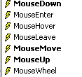 |  |
Die Maus hat gerade den Bereich des Steuerelements betreten | |
Die Maus hat gerade den Bereich des Steuerelements verlassen | |
Die Maus bewegt sich innerhalb des Steuerelementbereichs | |
Linke Maustaste gedrückt | |
Linke Maustaste losgelassen | |
Der Benutzer legt ein Objekt auf dem Steuerelement ab | |
Der Benutzer betritt den Bereich des Steuerelements, während er ein Objekt zieht | |
Der Benutzer verlässt den Bereich des Steuerelements, während er ein Objekt zieht | |
Der Benutzer bewegt sich beim Ziehen eines Objekts über den Bereich des Steuerelements |
Hier ist ein Programm, das Ihnen hilft, besser zu verstehen, wann die verschiedenen Mausereignisse auftreten:
 |
Nr. | Typ | Name | Rolle |
1 | Bezeichnung | lblPosition | um die Mausposition in Formular 1, Liste 2 oder Schaltfläche 3 anzuzeigen |
2 | ListBox | lstEvts | zur Anzeige von Mausereignissen außer MouseMove |
3 | Button | btnClear | zum Löschen des Inhalts von 2 |
Die Ereignisbehandler lauten wie folgt. Um die Mausbewegungen über die drei Steuerelemente hinweg zu verfolgen, schreiben wir einen einzigen Handler:
' évt form1_mousemove
Private Sub Form1_MouseMove(ByVal sender As System.Object, ByVal e As System.Windows.Forms.MouseEventArgs) _
Handles MyBase.MouseMove, lstEvts.MouseMove, btnEffacer.MouseMove, lstEvts.MouseMove
' mvt mouse - displays its (X,Y) coordinates
lblPosition.Text = "(" & e.X & "," & e.Y & ")"
End Sub
Es ist wichtig zu beachten, dass sich das Koordinatensystem jedes Mal ändert, wenn die Maus in den Bereich eines Steuerelements gelangt. Sein Ursprung (0,0) ist die obere linke Ecke des Steuerelements, auf dem sie sich gerade befindet. Daher ist während der Ausführung, wenn die Maus vom Formular auf die Schaltfläche bewegt wird, die Änderung der Koordinaten deutlich sichtbar. Um diese Änderungen im Mausbereich besser zu erkennen, können Sie die Cursor-Eigenschaft der Steuerelemente verwenden:
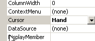
Mit dieser Eigenschaft können Sie die Form des Mauszeigers festlegen, wenn er in den Bereich des Steuerelements gelangt. In unserem Beispiel haben wir den Mauszeiger für das Formular selbst auf „Standard“, für Liste 2 auf „Hand“ und für Schaltfläche 3 auf „Nein“ gesetzt, wie in den folgenden Screenshots zu sehen ist.


In der Methode [InitializeComponent] lautet der durch diese Auswahl generierte Code wie folgt:
Me.lstEvts.Cursor = System.Windows.Forms.Cursors.Hand
Me.btnEffacer.Cursor = System.Windows.Forms.Cursors.No
Um außerdem Mausbewegungen auf Liste 2 zu erkennen, behandeln wir die Ereignisse MouseEnter und MouseLeave für diese Liste:
' evt lstEvts_MouseEnter
Private Sub lstEvts_MouseEnter(ByVal sender As System.Object, ByVal e As System.EventArgs) _
Handles lstEvts.MouseEnter
affiche("MouseEnter sur liste")
End Sub
' evt lstEvts_MouseLeave
Private Sub lstEvts_MouseLeave(ByVal sender As System.Object, ByVal e As System.EventArgs) _
Handles lstEvts.MouseLeave
affiche("MouseLeave sur liste")
End Sub
' poster
Private Sub affiche(ByVal message As String)
' the message is displayed at the top of the event list
lstEvts.Items.Insert(0, message)
End Sub

Um Klicks auf dem Formular zu verarbeiten, behandeln wir die Ereignisse „MouseDown“ und „MouseUp“:
' évt Form1_MouseDown
Private Sub Form1_MouseDown(ByVal sender As System.Object, ByVal e As System.Windows.Forms.MouseEventArgs) _
Handles MyBase.MouseDown
affiche("MouseDown sur formulaire")
End Sub
' évt Form1_MouseUp
Private Sub Form1_MouseUp(ByVal sender As System.Object, ByVal e As System.Windows.Forms.MouseEventArgs) _
Handles MyBase.MouseUp
affiche("MouseUp sur formulaire")
End Sub

Zum Schluss noch der Code für den Click-Ereignishandler der Schaltfläche „Löschen“:
' évt btnEffacer_Click
Private Sub btnEffacer_Click(ByVal sender As System.Object, ByVal e As System.EventArgs) _
Handles btnEffacer.Click
' clears the event list
lstEvts.Items.Clear()
End Sub
5.6. Erstellen eines Fensters mit einem Menü
Sehen wir uns nun an, wie man ein Fenster mit einem Menü erstellt. Wir erstellen das folgende Fenster:
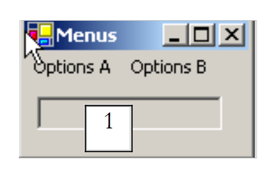 |
Steuerelement 1 ist ein schreibgeschütztes Textfeld (ReadOnly=true) mit dem Namen txtStatut. Die Menüstruktur sieht wie folgt aus:
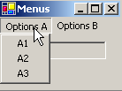 |  |
Menüoptionen sind Steuerelemente wie andere visuelle Komponenten und verfügen über Eigenschaften und Ereignisse. Beispielsweise sieht die Eigenschaftstabelle für die Menüoption A1 wie folgt aus:

In unserem Beispiel werden zwei Eigenschaften verwendet:
der Name des Menü-Steuerelements | |
die Bezeichnung der Menüoption |
Die Eigenschaften der verschiedenen Menüoptionen in unserem Beispiel lauten wie folgt:
Name | Text |
mnuA | Optionen A |
mnuA1 | A1 |
mnuA2 | A2 |
mnuA3 | A3 |
mnuB | Optionen B |
mnuB1 | B1 |
mnuSep1 | - (Trennzeichen) |
mnuB2 | B2 |
mnuB3 | B3 |
mnuB31 | B31 |
mnuB32 | B32 |
Um ein Menü zu erstellen, wählen Sie die Komponente „MainMenu“ aus der Leiste „ToolBox“ aus:

Daraufhin wird ein leeres Menü mit leeren Feldern, die mit „Type Here“ beschriftet sind, auf dem Formular platziert. Geben Sie dort einfach die verschiedenen Menüoptionen ein:

Um eine Trennlinie zwischen zwei Optionen einzufügen, wie oben zwischen den Optionen B1 und B2 gezeigt, positionieren Sie den Cursor an der Stelle, an der die Trennlinie im Menü erscheinen soll, klicken Sie mit der rechten Maustaste und wählen Sie die Option „Trennlinie einfügen“:
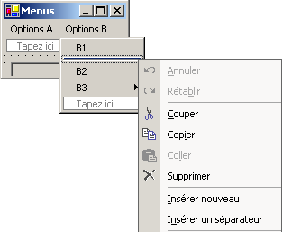
Wenn Sie die Anwendung mit Strg+F5 ausführen, sehen Sie ein Formular mit einem Menü, das noch keine Funktion hat. Menüoptionen werden als Komponenten behandelt: Sie verfügen über Eigenschaften und Ereignisse. Wählen Sie im [Codefenster] die Komponente mnuA1 aus und wählen Sie anschließend die zugehörigen Ereignisse aus:
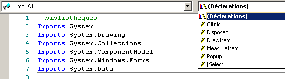
Wenn Sie das oben genannte Click-Ereignis auslösen, generiert VS.NET automatisch die folgende Prozedur:
Private Sub mnuA1_Click(ByVal sender As Object, ByVal e As System.EventArgs) Handles mnuA.Click
....
End Sub
Wir könnten auf diese Weise für alle Menüoptionen vorgehen. Hier kann dieselbe Prozedur für alle Optionen verwendet werden. Daher benennen wir die vorherige Prozedur *in display* um und deklarieren die Ereignisse, die sie verarbeitet:
Private Sub affiche(ByVal sender As Object, ByVal e As System.EventArgs) _
Handles mnuA1.Click, mnuA2.Click, mnuB1.Click, mnuB2.Click, mnuB31.Click, mnuB32.Click
' displays the name of the selected submenu in the TextBox
txtStatut.Text = (CType(sender, MenuItem)).Text
End Sub
In dieser Methode zeigen wir einfach die Text-Eigenschaft der Menüoption an, die das Ereignis ausgelöst hat. Der Absender der Ereignisquelle ist vom Typ Object. Die Menüoptionen sind vom Typ MenuItem, daher müssen wir hier eine Typumwandlung von Object nach MenuItem vornehmen. Führen Sie die Anwendung aus und wählen Sie die Option A1 aus, um die folgende Meldung anzuzeigen:

Der relevante Code für diese Anwendung ist, abgesehen von der Display-Methode, der Code zum Erstellen des Menüs im Konstruktor des Formulars (InitializeComponent):
Private Sub InitializeComponent()
Me.mainMenu1 = New System.Windows.Forms.MainMenu
Me.mnuA = New System.Windows.Forms.MenuItem
Me.mnuA1 = New System.Windows.Forms.MenuItem
Me.mnuA2 = New System.Windows.Forms.MenuItem
Me.mnuA3 = New System.Windows.Forms.MenuItem
Me.mnuB = New System.Windows.Forms.MenuItem
Me.mnuB1 = New System.Windows.Forms.MenuItem
Me.mnuB2 = New System.Windows.Forms.MenuItem
Me.mnuB3 = New System.Windows.Forms.MenuItem
Me.mnuB31 = New System.Windows.Forms.MenuItem
Me.mnuB32 = New System.Windows.Forms.MenuItem
Me.txtStatut = New System.Windows.Forms.TextBox
Me.mnuSep1 = New System.Windows.Forms.MenuItem
Me.SuspendLayout()
'
' mainMenu1
'
Me.mainMenu1.MenuItems.AddRange(New System.Windows.Forms.MenuItem() {Me.mnuA, Me.mnuB})
'
' mnuA
'
Me.mnuA.Index = 0
Me.mnuA.MenuItems.AddRange(New System.Windows.Forms.MenuItem() {Me.mnuA1, Me.mnuA2, Me.mnuA3})
Me.mnuA.Text = "Options A"
'
' mnuA1
'
Me.mnuA1.Index = 0
Me.mnuA1.Text = "A1"
'
' mnuA2
'
Me.mnuA2.Index = 1
Me.mnuA2.Text = "A2"
'
' mnuA3
'
Me.mnuA3.Index = 2
Me.mnuA3.Text = "A3"
'
' mnuB
'
Me.mnuB.Index = 1
Me.mnuB.MenuItems.AddRange(New System.Windows.Forms.MenuItem() {Me.mnuB1, Me.mnuSep1, Me.mnuB2, Me.mnuB3})
Me.mnuB.Text = "Options B"
'
' mnuB1
'
Me.mnuB1.Index = 0
Me.mnuB1.Text = "B1"
'
' mnuB2
'
Me.mnuB2.Index = 2
Me.mnuB2.Text = "B2"
'
' mnuB3
'
Me.mnuB3.Index = 3
Me.mnuB3.MenuItems.AddRange(New System.Windows.Forms.MenuItem() {Me.mnuB31, Me.mnuB32})
Me.mnuB3.Text = "B3"
'
' mnuB31
'
Me.mnuB31.Index = 0
Me.mnuB31.Text = "B31"
'
' mnuB32
'
Me.mnuB32.Index = 1
Me.mnuB32.Text = "B32"
'
' txtStatut
'
Me.txtStatut.Location = New System.Drawing.Point(8, 8)
Me.txtStatut.Name = "txtStatut"
Me.txtStatut.ReadOnly = True
Me.txtStatut.Size = New System.Drawing.Size(112, 20)
Me.txtStatut.TabIndex = 0
Me.txtStatut.Text = ""
'
' mnuSep1
'
Me.mnuSep1.Index = 1
Me.mnuSep1.Text = "-"
'
' Form1
'
Me.AutoScaleBaseSize = New System.Drawing.Size(5, 13)
Me.ClientSize = New System.Drawing.Size(136, 42)
Me.Controls.Add(txtStatut)
Me.Menu = Me.mainMenu1
Me.Name = "Form1"
Me.Text = "Menus"
Me.ResumeLayout(False)
End Sub
Beachten Sie die Anweisung, die das Menü mit dem Formular verknüpft:
Me.Menu = Me.mainMenu1
5.7. Nicht-visuelle Komponenten
Wir werden uns nun einige nicht-visuelle Komponenten ansehen: Diese werden während der Entwicklung verwendet, sind aber zur Laufzeit nicht sichtbar.
5.7.1. Dialogfelder „OpenFileDialog“ und „SaveFileDialog“
Wir werden die folgende Anwendung erstellen:
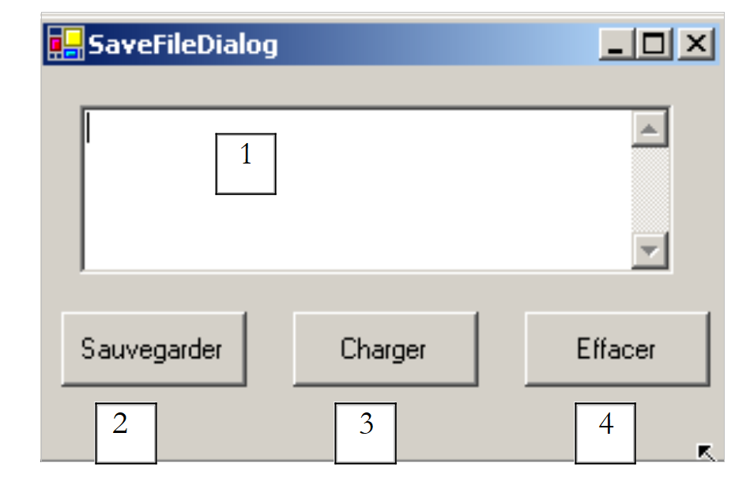 |
Die Steuerelemente sind wie folgt:
Nr. | Typ | Name | Rolle |
1 | Mehrzeiliges Textfeld | txtText | vom Benutzer eingegebener oder aus einer Datei geladener Text |
2 | Schaltfläche | btnSave | speichert den Text aus 1 in einer Textdatei |
3 | Schaltfläche | btnLoad | ermöglicht es Ihnen, den Inhalt einer Textdatei in 1 zu laden |
4 | Schaltfläche | btnClear | löscht den Inhalt von 1 |
Es werden zwei nicht-visuelle Steuerelemente verwendet:

Wenn sie aus der „ToolBox“ gezogen und auf das Formular abgelegt werden, werden sie in einem separaten Bereich am unteren Rand des Formulars platziert. Die „Dialog“-Komponenten werden aus der „ToolBox“ gezogen:
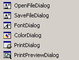
Der Code für die Schaltfläche „Clear“ ist einfach:
Private Sub btnEffacer_Click(ByVal sender As Object, ByVal e As System.EventArgs) _
Handles btnEffacer.Click
' clear the input box
txtTexte.Text = ""
End Sub
Die Klasse „SaveFileDialog“ ist wie folgt definiert:
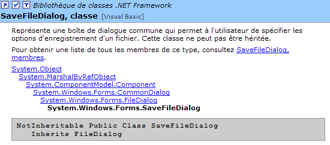
Sie erbt von mehreren Klassenebenen. Von ihren zahlreichen Eigenschaften und Methoden werden wir uns auf die folgenden konzentrieren:
die Dateitypen, die in der Dropdown-Liste „Dateityp“ des Dialogfelds angeboten werden | |
der Index des Dateityps, der standardmäßig in der obigen Liste angezeigt wird. Beginnt bei 0. | |
der Ordner, der zunächst zum Speichern der Datei angezeigt wird | |
Der vom Benutzer angegebene Name der zu speichernden Datei | |
Eine Methode, die das Speicherdialogfeld anzeigt. Gibt ein DialogResult zurück. |
Die ShowDialog-Methode zeigt ein Dialogfeld an, das in etwa wie folgt aussieht:
 |
Dropdown-Liste, die aus der Filter-Eigenschaft generiert wird. Der Standarddateityp wird durch FilterIndex | |
aktuelles Verzeichnis, festgelegt durch InitialDirectory, sofern diese Eigenschaft angegeben wurde | |
der Name der vom Benutzer ausgewählten oder direkt eingegebenen Datei. Ist in der Eigenschaft „FileName“ verfügbar | |
Schaltflächen „Speichern“/„Abbrechen“. Wenn die Schaltfläche „Speichern“ verwendet wird, gibt die Funktion ShowDialog das Ergebnis DialogResult.OK zurück |
Die Speicherroutine kann wie folgt geschrieben werden:
Private Sub btnSauvegarder_Click(ByVal sender As Object, ByVal e As System.EventArgs) _
Handles btnSauvegarder.Click
' save the input box in a text file
' set the savefileDialog1 dialog box
saveFileDialog1.InitialDirectory = Application.ExecutablePath
saveFileDialog1.Filter = "Fichiers texte (*.txt)|*.txt|Tous les fichiers (*.*)|*.*"
saveFileDialog1.FilterIndex = 0
' display the dialog box and retrieve the result
If saveFileDialog1.ShowDialog() = DialogResult.OK Then
' retrieve the file name
Dim nomFichier As String = saveFileDialog1.FileName
Dim fichier As StreamWriter = Nothing
Try
' open the file for writing
fichier = New StreamWriter(nomFichier)
' we write the text inside
fichier.Write(txtTexte.Text)
Catch ex As Exception
' problem
MessageBox.Show("Problème à l'écriture du fichier (" + ex.Message + ")", "Erreur", MessageBoxButtons.OK, MessageBoxIcon.Error)
Return
Finally
' close the file
Try
fichier.Close()
Catch
End Try
End Try
End If
End Sub
- Wir legen das Startverzeichnis auf das Verzeichnis fest, das die ausführbare Datei der Anwendung enthält:
- Wir legen die anzuzeigenden Dateitypen fest
Beachten Sie die Filtersyntax: filter1|filter2|..|filteren, wobei filteri = Text|Dateityp ist. Hier kann der Benutzer zwischen *.txt- und *.*-Dateien wählen.
- Wir legen den anzuzeigenden Dateityp am Anfang fest
Hier werden dem Benutzer zuerst Dateien vom Typ *.txt angezeigt.
- Das Dialogfeld wird angezeigt und das Ergebnis abgerufen
If saveFileDialog1.ShowDialog() = DialogResult.OK Then
- Solange das Dialogfeld angezeigt wird, hat der Benutzer keinen Zugriff mehr auf das Hauptformular (ein sogenanntes modales Dialogfeld). Der Benutzer legt den Namen der zu speichernden Datei fest und verlässt das Dialogfeld entweder durch Klicken auf die Schaltfläche „Speichern“, die Schaltfläche „Abbrechen“ oder durch Schließen des Dialogfelds. Das Ergebnis der ShowDialog-Methode ist nur dann DialogResult.OK, wenn der Benutzer das Dialogfeld über die Schaltfläche „Speichern“ verlassen hat.
- Sobald dies geschehen ist, befindet sich der Name der zu erstellenden Datei nun in der Eigenschaft FileName des Objekts saveFileDialog1. Wir kehren dann zum Standardvorgang zum Erstellen einer Textdatei zurück. Wir schreiben den Inhalt des Textfelds: txtTexte.Text, während wir eventuell auftretende Ausnahmen behandeln.
Die Klasse „OpenFileDialog“ ist der Klasse „SaveFileDialog“ sehr ähnlich und stammt aus derselben Klassenlinie. Von diesen Eigenschaften und Methoden werden wir uns auf Folgendes konzentrieren:
die Dateitypen, die in der Dropdown-Liste „Dateityp“ des Dialogfelds angeboten werden | |
der Index des Dateityps, der standardmäßig in der obigen Liste angezeigt wird. Beginnt bei 0. | |
das Verzeichnis, das zunächst für die Suche nach der zu öffnenden Datei angezeigt wird | |
Der vom Benutzer angegebene Name der zu öffnenden Datei | |
Eine Methode, die das Speicherdialogfeld anzeigt. Gibt ein DialogResult zurück. |
Die ShowDialog-Methode zeigt ein Dialogfeld an, das in etwa wie folgt aussieht:
 |
Dropdown-Liste, die anhand der Filter-Eigenschaft erstellt wird. Der Standarddateityp wird durch FilterIndex | |
aktueller Ordner, festgelegt durch InitialDirectory, sofern diese Eigenschaft angegeben wurde | |
Name der vom Benutzer ausgewählten oder direkt eingegebenen Datei. Ist in der Eigenschaft „FileName“ verfügbar | |
Schaltflächen „Öffnen“/„Abbrechen“. Wenn die Schaltfläche „Öffnen“ verwendet wird, gibt die Funktion ShowDialog das Ergebnis DialogResult.OK zurück |
Das offene Verfahren lässt sich wie folgt beschreiben:
Private Sub btnCharger_Click(ByVal sender As Object, ByVal e As System.EventArgs) _
Handles btnCharger.Click
' load a text file into the input box
' set the openfileDialog1 dialog box
openFileDialog1.InitialDirectory = Application.ExecutablePath
openFileDialog1.Filter = "Fichiers texte (*.txt)|*.txt|Tous les fichiers (*.*)|*.*"
openFileDialog1.FilterIndex = 0
' display the dialog box and retrieve the result
If openFileDialog1.ShowDialog() = DialogResult.OK Then
' retrieve the file name
Dim nomFichier As String = openFileDialog1.FileName
Dim fichier As StreamReader = Nothing
Try
' open the file in read mode
fichier = New StreamReader(nomFichier)
' read the entire file and put it in the TextBox
txtTexte.Text = fichier.ReadToEnd()
Catch ex As Exception
' problem
MessageBox.Show("Problème à la lecture du fichier (" + ex.Message + ")", "Erreur", MessageBoxButtons.OK, MessageBoxIcon.Error)
Return
Finally
' close the file
Try
fichier.Close()
Catch
End Try
End Try
End If
End Sub
- Wir legen das Startverzeichnis auf das Verzeichnis fest, das die ausführbare Datei der Anwendung enthält:
- Wir legen die anzuzeigenden Dateitypen fest
- Legen Sie den Dateityp fest, der zuerst angezeigt werden soll
Hier werden dem Benutzer *.txt-Dateien zuerst angezeigt.
- Das Dialogfeld wird angezeigt und das Ergebnis abgerufen
If openFileDialog1.ShowDialog() = DialogResult.OK Then
Solange das Dialogfeld angezeigt wird, hat der Benutzer keinen Zugriff mehr auf das Hauptformular (ein sogenanntes modales Dialogfeld). Der Benutzer gibt den Namen der zu öffnenden Datei an und verlässt das Dialogfeld entweder durch Klicken auf die Schaltfläche „Öffnen“, die Schaltfläche „Abbrechen“ oder durch Schließen des Dialogfelds. Das Ergebnis der ShowDialog-Methode ist nur dann DialogResult.OK, wenn der Benutzer die Schaltfläche „Öffnen“ verwendet hat, um das Dialogfeld zu verlassen.
- Sobald dies geschehen ist, befindet sich der Name der zu erstellenden Datei nun in der Eigenschaft FileName des Objekts openFileDialog1. Wir kehren dann zum Standardvorgang des Lesens einer Textdatei zurück. Beachten Sie die Methode, mit der Sie die gesamte Datei lesen können:
- Der Inhalt der Datei wird in das Textfeld txtTexte geschrieben. Wir behandeln alle möglicherweise auftretenden Ausnahmen.
5.7.2. Dialogfelder „FontColor“ und „ColorDialog“
Wir setzen das vorherige Beispiel fort und fügen zwei neue Schaltflächen hinzu:
 |
Nr. | Typ | Name | Rolle |
6 | Schaltfläche | btnColor | zum Festlegen der Textfarbe des Textfelds |
7 | Schaltfläche | btnFont | zum Festlegen der Schriftart des Textfelds |
Wir platzieren ein ColorDialog-Steuerelement und ein FontDialog-Steuerelement auf dem Formular:

Die Klassen „FontDialog“ und „ColorDialog“ verfügen über eine ShowDialog-Methode, die der ShowDialog-Methode der Klassen „OpenFileDialog“ und „SaveFileDialog“ ähnelt. Mit der ShowDialog-Methode der Klasse „ColorDialog“ können Sie eine Farbe auswählen:

Wenn der Benutzer das Dialogfeld über die Schaltfläche „OK“ schließt, lautet das Ergebnis der ShowDialog-Methode „DialogResult.OK“, und die ausgewählte Farbe wird in der Color-Eigenschaft des verwendeten ColorDialog-Objekts gespeichert. Mit der ShowDialog-Methode der FontDialog-Klasse können Sie eine Schriftart auswählen:

Wenn der Benutzer das Dialogfeld durch Klicken auf die Schaltfläche „OK“ schließt, ist das Ergebnis der ShowDialog-Methode DialogResult.OK, und die ausgewählte Schriftart wird in der Font-Eigenschaft des verwendeten FontDialog-Objekts gespeichert. Wir verfügen über die Elemente zur Verarbeitung von Klicks auf die Schaltflächen „Color“ und „Font“:
Private Sub btnCouleur_Click(ByVal sender As Object, ByVal e As System.EventArgs) _
Handles btnCouleur.Click
' choice of text color
If colorDialog1.ShowDialog() = DialogResult.OK Then
' change the forecolor property of TextBox
txtTexte.ForeColor = colorDialog1.Color
End If
End Sub
Private Sub btnPolice_Click(ByVal sender As Object, ByVal e As System.EventArgs) _
Handles btnPolice.Click
' font selection
If fontDialog1.ShowDialog() = DialogResult.OK Then
' change the font property of TextBox
txtTexte.Font = fontDialog1.Font
End If
End Sub
5.7.3. Timer
Hier schlagen wir vor, die folgende Anwendung zu schreiben:
 |
Nr. | Typ | Name | Rolle |
1 | Textfeld, ReadOnly=true | txtChrono | zeigt einen Timer an |
2 | Schaltfläche | btnStopStart | Stopp-/Start-Schaltfläche für die Stoppuhr |
3 | Timer | timer1 | Komponente, die jede Sekunde ein Ereignis auslöst |
Der Timer läuft:

Der Timer ist abgelaufen:

Um den Inhalt des Textfelds „txtChrono“ jede Sekunde zu aktualisieren, benötigen wir eine Komponente, die jede Sekunde ein Ereignis generiert, das wir abfangen können, um die Anzeige der Stoppuhr zu aktualisieren. Diese Komponente ist der Timer:
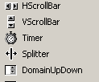
Sobald diese Komponente zum Formular hinzugefügt wurde (im Bereich „Nicht-visuelle Komponenten“), wird im Konstruktor des Formulars ein Timer-Objekt erstellt. Die Klasse System.Windows.Forms.Timer ist wie folgt definiert:

Von ihren Eigenschaften werden wir nur die folgenden betrachten:
Anzahl der Millisekunden, nach denen ein Tick-Ereignis ausgelöst wird. | |
das Ereignis, das am Ende des Intervalls in Millisekunden ausgelöst wird | |
Setzt den Timer auf aktiv (true) oder inaktiv (false) |
In unserem Beispiel heißt der Timer „timer1“ und „timer1.Interval“ ist auf 1000 ms (1 s) gesetzt. Das Tick-Ereignis tritt daher jede Sekunde auf. Ein Klick auf die Start-/Stopp-Schaltfläche wird durch die folgende Prozedur verarbeitet:
Private Sub btnArretMarche_Click(ByVal sender As Object, ByVal e As System.EventArgs) _
Handles btnArretMarche.Click
' off or on?
If btnArretMarche.Text = "Marche" Then
' we note the start time
début = DateTime.Now
' we display it
txtChrono.Text = "00:00:00"
' start timer
timer1.Enabled = True
' change the button label
btnArretMarche.Text = "Arrêt"
' end
Return
End If '
If btnArretMarche.Text = "Arrêt" Then
' timer off
timer1.Enabled = False
' change the button label
btnArretMarche.Text = "Marche"
' end
Return
End If
End Sub
Private Sub timer1_Tick(ByVal sender As Object, ByVal e As System.EventArgs) _
Handles timer1.Tick
' a second has passed
Dim maintenant As DateTime = DateTime.Now
Dim durée As TimeSpan = DateTime.op_Subtraction(maintenant, début)
txtChrono.Text = "" + durée.Hours.ToString("d2") + ":" + durée.Minutes.ToString("d2") + ":" + durée.Seconds.ToString("d2")
End Sub
Die Beschriftung der Start-/Stopp-Schaltfläche lautet entweder „Stopp“ oder „Start“. Wir müssen daher diese Beschriftung überprüfen, um zu entscheiden, was zu tun ist.
- Wenn die Beschriftung „Start“ lautet, speichern wir die Startzeit in einer globalen Variablen des Formularobjekts, der Timer wird gestartet (Enabled=true) und die Beschriftung der Schaltfläche ändert sich in „Stop“.
- Wenn die Beschriftung „Stop“ lautet, wird der Timer angehalten (Enabled=false) und die Beschriftung der Schaltfläche ändert sich in „Start“.
Public Class Timer1
Inherits System.Windows.Forms.Form
Private WithEvents timer1 As System.Windows.Forms.Timer
Private WithEvents btnArretMarche As System.Windows.Forms.Button
Private components As System.ComponentModel.IContainer
Private WithEvents txtChrono As System.Windows.Forms.TextBox
Private WithEvents label1 As System.Windows.Forms.Label
' instance variables
Private début As DateTime
Das oben genannte „start“-Attribut ist in allen Methoden der Klasse bekannt. Wir müssen noch das „Tick“-Ereignis des Objekts „timer1“ behandeln, ein Ereignis, das jede Sekunde auftritt:
Private Sub timer1_Tick(ByVal sender As Object, ByVal e As System.EventArgs) _
Handles timer1.Tick
' a second has passed
Dim maintenant As DateTime = DateTime.Now
Dim durée As TimeSpan = DateTime.op_Subtraction(maintenant, début)
txtChrono.Text = "" + durée.Hours.ToString("d2") + ":" + durée.Minutes.ToString("d2") + ":" + durée.Seconds.ToString("d2")
End Sub
Wir berechnen die seit dem Start der Stoppuhr verstrichene Zeit. Wir erhalten ein TimeSpan-Objekt, das eine Dauer darstellt. Diese muss im Timer im Format hh:mm:ss angezeigt werden. Dazu verwenden wir die Eigenschaften Hours, Minutes und Seconds des TimeSpan-Objekts, die jeweils die Stunden, Minuten und Sekunden der Dauer darstellen. Wir zeigen sie im Format ToString("d2") an, um eine zweistellige Anzeige zu gewährleisten.
5.8. Das Beispiel zur Steuerberechnung
Wir kehren zur IMPOTS-Anwendung zurück, die wir bereits zweimal behandelt haben. Wir fügen ihr nun eine grafische Benutzeroberfläche hinzu:
 |
Die Steuerelemente sind wie folgt
Nr. | Typ | Name | Rolle |
RadioButton | rdYes | aktiviert, wenn verheiratet | |
RadioButton | rdNein | Markiert, wenn nicht verheiratet | |
NumericUpDown | incChildren | Anzahl der Kinder des Steuerpflichtigen Minimum=0, Maximum=20, Schrittweite=1 | |
Textfeld | txtSalary | Jahresgehalt des Steuerzahlers in F | |
Textfeld | txtSteuern | Höhe der fälligen Steuer ReadOnly=true | |
Schaltfläche | btnCalculate | startet die Steuerberechnung | |
Schaltfläche | btnClear | Setzt das Formular beim Laden in den Ausgangszustand zurück | |
Schaltfläche | btnExit | zum Beenden der Anwendung |
Bedienungshinweise
- Die Schaltfläche „Berechnen“ bleibt deaktiviert, solange das Gehaltsfeld leer ist
- Wenn sich bei der Berechnung herausstellt, dass das Gehalt falsch ist, wird eine Fehlermeldung angezeigt:

Das Programm ist unten dargestellt. Es verwendet die Klasse Impot, die im Kapitel über Klassen erstellt wurde. Ein Teil des von VS.NET automatisch generierten Codes wurde hier nicht wiedergegeben.
using System;
using System.Drawing;
using System.Collections;
using System.ComponentModel;
using System.Windows.Forms;
using System.Data;
' options
Option Explicit On
Option Strict On
' namespaces
Imports System
Imports System.Drawing
Imports System.Collections
Imports System.ComponentModel
Imports System.Windows.Forms
Imports System.Data
' form class
Public Class frmImpots
Inherits System.Windows.Forms.Form
Private WithEvents label1 As System.Windows.Forms.Label
Private WithEvents rdOui As System.Windows.Forms.RadioButton
Private WithEvents rdNon As System.Windows.Forms.RadioButton
Private WithEvents label2 As System.Windows.Forms.Label
Private WithEvents txtSalaire As System.Windows.Forms.TextBox
Private WithEvents label3 As System.Windows.Forms.Label
Private WithEvents label4 As System.Windows.Forms.Label
Private WithEvents groupBox1 As System.Windows.Forms.GroupBox
Private WithEvents btnCalculer As System.Windows.Forms.Button
Private WithEvents btnEffacer As System.Windows.Forms.Button
Private WithEvents btnQuitter As System.Windows.Forms.Button
Private WithEvents txtImpots As System.Windows.Forms.TextBox
Private components As System.ComponentModel.Container = Nothing
Private WithEvents incEnfants As System.Windows.Forms.NumericUpDown
' data tables required for tax calculation
Private limites() As Decimal = {12620D, 13190D, 15640D, 24740D, 31810D, 39970D, 48360D, 55790D, 92970D, 127860D, 151250D, 172040D, 195000D, 0D}
Private coeffR() As Decimal = {0D, 0.05D, 0.1D, 0.15D, 0.2D, 0.25D, 0.3D, 0.35D, 0.4D, 0.45D, 0.55D, 0.5D, 0.6D, 0.65D}
Private coeffN() As Decimal = {0D, 631D, 1290.5D, 2072.5D, 3309.5D, 4900D, 6898.5D, 9316.5D, 12106D, 16754.5D, 23147.5D, 30710D, 39312D, 49062D}
' tax object
Private objImpôt As impot = Nothing
Public Sub New()
InitializeComponent()
' form initialization
btnEffacer_Click(Nothing, Nothing)
btnCalculer.Enabled = False
' tax object creation
Try
objImpôt = New impot(limites, coeffR, coeffN)
Catch ex As Exception
MessageBox.Show("Impossible de créer l'objet impôt (" + ex.Message + ")", "Erreur", MessageBoxButtons.OK, MessageBoxIcon.Error)
' inhibit the salary entry field
txtSalaire.Enabled = False
End Try 'try-catch
End Sub
Protected Overloads Sub Dispose(ByVal disposing As Boolean)
....
End Sub
Private Sub InitializeComponent()
Me.btnQuitter = New System.Windows.Forms.Button
Me.groupBox1 = New System.Windows.Forms.GroupBox
Me.btnEffacer = New System.Windows.Forms.Button
Me.btnCalculer = New System.Windows.Forms.Button
Me.txtSalaire = New System.Windows.Forms.TextBox
Me.label1 = New System.Windows.Forms.Label
Me.label2 = New System.Windows.Forms.Label
Me.label3 = New System.Windows.Forms.Label
Me.rdNon = New System.Windows.Forms.RadioButton
Me.txtImpots = New System.Windows.Forms.TextBox
Me.label4 = New System.Windows.Forms.Label
Me.rdOui = New System.Windows.Forms.RadioButton
Me.incEnfants = New System.Windows.Forms.NumericUpDown
Me.groupBox1.SuspendLayout()
CType(Me.incEnfants, System.ComponentModel.ISupportInitialize).BeginInit()
Me.SuspendLayout()
....
End Sub 'InitializeComponent
Public Shared Sub Main()
Application.Run(New frmImpots)
End Sub 'Main
Private Sub btnEffacer_Click(ByVal sender As Object, ByVal e As System.EventArgs) _
Handles btnEffacer.Click
' raz du formulaire
incEnfants.Value = 0
txtSalaire.Text = ""
txtImpots.Text = ""
rdNon.Checked = True
End Sub 'btnEffacer_Click
Private Sub txtSalaire_TextChanged(ByVal sender As Object, ByVal e As System.EventArgs) _
Handles txtSalaire.TextChanged
' calculate button status
btnCalculer.Enabled = txtSalaire.Text.Trim() <> ""
End Sub 'txtSalaire_TextChanged
Private Sub btnQuitter_Click(ByVal sender As Object, ByVal e As System.EventArgs) _
Handles btnQuitter.Click
' end application
Application.Exit()
End Sub 'btnQuitter_Click
Private Sub btnCalculer_Click(ByVal sender As Object, ByVal e As System.EventArgs) _
Handles btnCalculer.Click
' is the salary correct?
Dim intSalaire As Integer = 0
Try
' salary recovery
intSalaire = Integer.Parse(txtSalaire.Text)
' it must be >=0
If intSalaire < 0 Then
Throw New Exception("")
End If
Catch ex As Exception
' error msg
MessageBox.Show(Me, "Salaire incorrect", "Erreur de saisie", MessageBoxButtons.OK, MessageBoxIcon.Error)
' focus on wrong field
txtSalaire.Focus()
' select text for input field
txtSalaire.SelectAll()
' back to visual interface
Return
End Try 'try-catch
' salary is correct - tax is calculated
txtImpots.Text = "" & CLng(objImpôt.calculer(rdOui.Checked, CInt(incEnfants.Value), intSalaire))
End Sub 'btnCalculer_Click
End Class
Hier verwenden wir die Assembly „impots.dll“, die das Ergebnis der Kompilierung der Klasse „impots“ aus Kapitel 2 ist. Zur Erinnerung: Diese Assembly kann im Konsolenmodus mit dem Befehl
Dieser Befehl generiert die Datei „impots.dll“, die als Assembly bezeichnet wird. Diese Assembly kann dann in verschiedenen Projekten verwendet werden. Hier, in unserem Projekt unter VS.NET, nutzen wir das Fenster „Projekteigenschaften“:

Um eine Referenz (eine Assembly) hinzuzufügen, klicken wir mit der rechten Maustaste auf die Gruppe „Referenzen“ oben, wählen die Option [Referenz hinzufügen] und geben die Assembly [impots.dll] an, die wir im Projektordner abgelegt haben:
dos>dir
01/03/2004 14:39 9 250 gui_impots.vb
01/03/2004 14:37 4 096 impots.dll
01/03/2004 14:41 12 288 gui_impots.exe
Sobald die Assembly [impots.dll] in das Projekt aufgenommen wurde, ist die Klasse [impots] dem Projekt bekannt. Zuvor war dies nicht der Fall. Eine andere Methode besteht darin, die Quelldatei impots.vb in das Projekt aufzunehmen. Klicken Sie dazu im Fenster „Projekteigenschaften“ mit der rechten Maustaste auf das Projekt, wählen Sie die Option [Hinzufügen/Vorhandenes Element hinzufügen] und geben Sie die Datei impots.vb an.